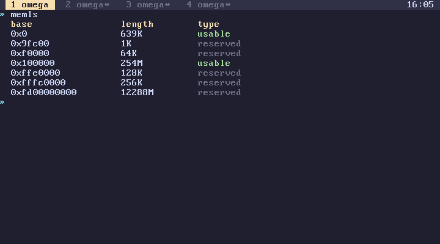

subverge
subvergeMemory
The memory words read and write physical memory directly, and alloc hands out raw blocks from the kernel heap. omega's own values, such as strings and quotes, live in the same heap but are managed by the garbage collector, and you never free them by hand.
The address space
The kernel, all four tabs, all omega values and whatever you alloc share one address space. At boot the kernel identity-maps the first 4 GiB with 2 MiB pages, so every address below 4 GiB is the physical address of the same number. Everything runs in ring 0, in that one fixed map, without user space or memory protection.
Roughly, from the bottom:
| Where | What |
|---|---|
0x0 |
the real-mode interrupt vector table and BIOS data, left over from boot |
0xB8000 |
VGA text memory, the actual screen |
0x100000 |
the kernel, loaded at 1 MiB, code then data then bss |
| after the kernel | the kernel heap, up to 64 MiB |
| the rest | free RAM, and above it, devices |
memmap gives you the real map the bootloader passed in, as [ base length type ] entries, and memls prints it as a table. kernel gives the kernel image size and total RAM.

The heap
The kernel heap starts right after the kernel and runs for 64 MiB, or less on machines with less RAM. It's a single first-fit free list: blocks have a small header, are rounded up to 16 bytes, and neighbouring free blocks are merged when the allocator walks past them. Interrupts are disabled while it works, because all four tabs share it.
Everything allocates from it: omega objects, task stacks, the editor's buffers, the installer's copy of the kernel, and your allocs. heap gives you bytes in use and the total. If the kernel itself runs out, that's a panic and the machine stops. If an omega word runs out, it fails with ran out of memory.
The words
| Word | Effect | |
|---|---|---|
peek |
addr -- n |
read a byte |
peekd |
addr -- n |
read 4 bytes |
peekq |
addr -- n |
read 8 bytes |
poke |
n addr -- |
write a byte |
poked |
n addr -- |
write 4 bytes |
pokeq |
n addr -- |
write 8 bytes |
alloc |
n -- addr |
zeroed memory, 1 byte to 16 MiB |
free |
addr -- |
give it back |
heap |
-- used total |
heap usage |
Reads and writes are little-endian, unaligned addresses work, and nothing is checked. peek on an address with nothing behind it gives you whatever the bus gives back. poke on the kernel's own code succeeds and takes effect the next time that code runs.
What poke doesn't do
It doesn't take part in transactions. A line that pokes and then fails has still poked. back can't unpoke. And on an installed disk, nothing you poked is saved, because only worlds and root are.
alloc behaves the same way. A line that allocates and then fails keeps the allocation, and the collector doesn't track raw memory, so it has to be freed explicitly. life is an example: it allocates two boards at start and frees both on exit.
Poking the screen
The screen is the safest place to experiment, since mistakes there are only visual:
65 0xB8000 poke
puts an A in the top-left corner of the physical screen. Every character takes two bytes there, the character and then its colour, so
0x4E 0xB8001 poke
turns that A yellow on red. It doesn't last, because the tab bar and the visible tab get redrawn over it. To draw properly, use the screen words, which write into the tab's own buffer instead.
Other memory
Writes to the low megabyte, the kernel image or the page tables (boot) usually end in a fault or a hang. A CPU fault in a tab only restarts that tab, but corrupting a kernel structure usually means restarting QEMU.
hexview (tools) is a hex editor built on these words, and it writes as you type.